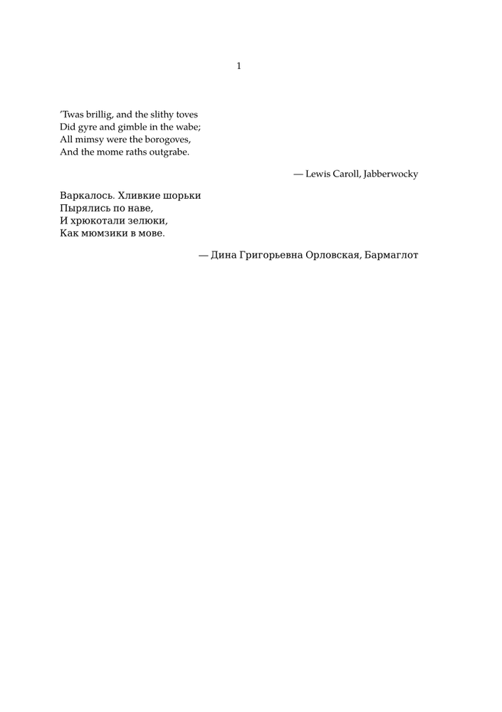

A Unicode block is an interval of code points which represent characters that are semantically related to each other. For example, there is a Unicode block for characters from the Devanagari script which is used by several Indian languages. Another Unicode block corresponds to characters which denote mathematical operators, such as those that indicate the union and the intersection of sets.
ConTeXt has special names for all Unicode blocks. These names can be used to specify ranges of code points in the setups of several commands.
This article uses some basic terms, such as character, code point, and assigned code point, from the Unicode Standard[1]. For brief descriptions of these terms, see the Unicode glossary[2].
Contents
Unicode blocks
A Unicode block, or, simply, a block, is any of the subsets of the Unicode code space that are listed in the file Blocks.txt[3] of the Unicode Character Database. The Unicode code space is the set of all code points, that is, the set of all integers from 0 to the integer whose hexadecimal representation is 10FFF.
The main properties of blocks are described in the Unicode Standard[1] (Section 3.4, paragraph D10b). Every block is an interval of code points, and distinct blocks are disjoint from each other. In particular, the blocks form a partition of a subset of the Unicode code space.
A block starts at a code point that is a multiple of 16. The number of code points in each block is also a multiple of 16. Thus, the hexadecimal representation of the first code point in a block is of the form pqrs0, and that of the last code point in it is of the form tuvwF, where p, q, r, s, t, u, v, and w, are hexadecimal digits.
The Unicode Standard gives every block a unique name that describes the common semantic nature of its code points. These names are case insensitive, and the hyphens, spaces, and underscores, in them are insignificant. For example, one can refer to the block whose Unicode name is Myanmar Extended-A as myanmarextendeda, MyanmarExtendedA, or myanmar_extended_a. ConTeXt chooses the first of these alternative styles for the names of blocks, as described below.
The number of code points in a block varies. Some, such as the block named Syriac Supplement, have just 16 code points, and some others, such as the block named CJK Unified Ideographs Extension B with 42720 elements, have thousands of code points.
Every assigned code point belongs to some block, but there are blocks which contain unassigned code points too; for example, the block named Telugu contains the unassigned code point 0C50. On the other hand, there are some code points, necessarily unassigned, which do not belong to any block; the code point 0870 is one such. Thus, the set of all assigned code points is a proper subset of the union of all the blocks, and the union of all the blocks is a proper subset of the Unicode code space.
ConTeXt names of Unicode blocks
ConTeXt has its own names for all the Unicode blocks. Most of them are obtained by converting the Unicode name of the block to the lower case, and removing the hyphens and spaces in the name. The article entitled List of Unicode blocks contains a table of Unicode blocks, their ConTeXt names, and links to more information about them.
An example usage of Unicode blocks in ConTeXt
A typical use of Unicode blocks is in the definition of fallback fonts to provide glyphs for certain characters. Sometimes, when writing a document in ConTeXt, one needs to typeset special symbols that are not available in the base font of the document. In such a situation, one can specify a fallback font to provide these missing symbols.
For example, in the following document, the base font TeX Gyre Pagella does not have the glyphs for Cyrillic characters, whose code points are in the Unicode block Cyrillic. The document uses the \definefallbackfamily command to get the glyphs for this block from the DejaVu Serif font. The ConTeXt name of the block is supplied as the value of the key range in the last setup of the command.
-
\definefallbackfamily [mainface] [rm] [DejaVu Serif] [range=cyrillic] \definefontfamily [mainface] [rm] [TeX Gyre Pagella] \setupbodyfont [mainface] \starttext \startlines ’Twas brillig, and the slithy toves Did gyre and gimble in the wabe; All mimsy were the borogoves, And the mome raths outgrabe. \stoplines \rightaligned {— Lewis Caroll, Jabberwocky} \startlines Варкалось. Хливкие шорьки Пырялись по наве, И хрюкотали зелюки, Как мюмзики в мове. \stoplines \rightaligned {— Дина Григорьевна Орловская, Бармаглот} \stoptext
Here is an image showing the relevant part of the PDF file obtained by running context on a file containing this document:
- 
The verses in the above example are from the Wikipedia article on the poem Jabberwocky[4] by Lewis Carroll.
Another example
A different application of fallback fonts arises when one wants to replace the existing glyphs for some characters in the base font with glyphs for those characters from another font. This situation is different from the one in the previous example. There, the base font did not contain glyphs for the characters of interest, and the fallback font provided the missing glyphs. Here, the base font does contain glyphs for the characters in question, but, perhaps due to aesthetic reaosons, the author of the document, wants to replace those glyphs with glyphs from another font. In such a case, the latter font can be specified as a fallback font.
For example, the following document uses the pagella typescript to provide the base font, and uses the STIX General Regular font for mathematical script letters, which lie in the Unicode block Mathematical Alphanumeric Symbols. Instead of \definefallbackfamily which was used in the previous example, this document uses the command \definefontfallback. The ConTeXt name of the block is supplied as the third setup of this command. The last setup force=yes ensures that the glyphs of the relevant characters are replaced from the fallback font, overriding the glyphs that may exist in the base font for these characters.
\usetypescript [pagella] \definefontfallback [mathscript] [STIXGeneralRegular] [mathematicalalphanumericsymbols] [force=yes] \definefontsynonym [MathRoman] [pagella] [fallbacks=mathscript] \setupbodyfont [pagella] \starttext Look at this bestiary of mathematical script letters: \startformula 𝒜, 𝒞, 𝒟, 𝒢, 𝒥, 𝒦, 𝒪, 𝒫, 𝒬, 𝒮, 𝒯, 𝒰, 𝒱, 𝒲, 𝒳, 𝒴, 𝒵 \stopformula \stoptext
Here is an image showing the relevant part of the PDF file obtained by running context on a file containing this document:
{kind=link}
The log file resulting from that run of context says
system > 13: filename=/usr/share/fonts/opentype/stix/STIXGeneral-Regular.otf ...
so context is indeed, and as expected, taking some of the glyphs from the fallback font, which, in this case, is provided by the local operating system.
See also
- \definefontfallback — manual page with more information on the ConTeXt names of blocks, and their usage.
- char-ini.lua — source file containing the definitions of the ConTeXt names of Unicode blocks.
References
- ↑ 1.0 1.1 The Unicode Consortium, The Unicode Standard , Version 10.0.0, The Unicode Consortium, Mountain View, CA, USA, 2016, http://www.unicode.org/versions/Unicode10.0.0/ , Retrieved 2017-11-03.
- ↑ The Unicode Consortium, Glossary , http://www.unicode.org/glossary/ , Retrieved 2017-11-03.
- ↑ The Unicode Consortium, Blocks.txt , ftp://www.unicode.org/Public/UNIDATA/Blocks.txt , Retrieved 2017-11-03.
- ↑ Wikipedia contributors, Jabberwocky , Wikipedia: The Free Encyclopaedia, 2017-11-03, 07:58 UTC, https://en.wikipedia.org/w/index.php?title=Jabberwocky&oldid=808507152 , Retrieved 2017-11-03.